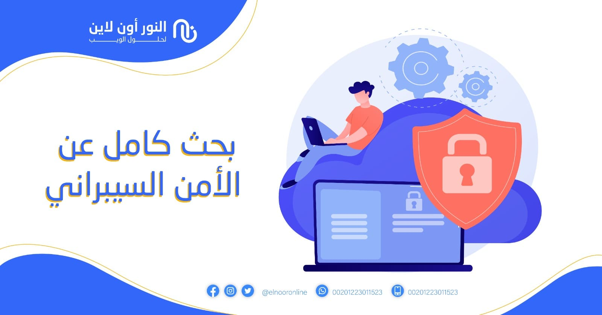
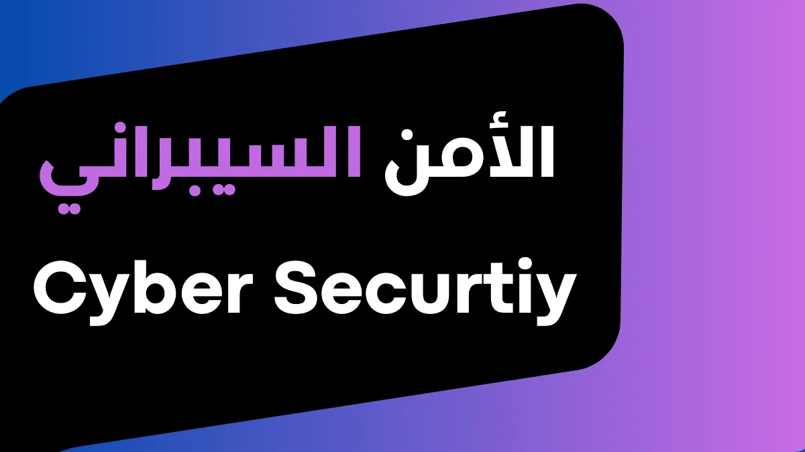

يهدف هذا القسم إلى تعزيز الوعي والمعرفة في مجال الأمن السيبراني، وتقديم أحدث المعلومات حول حماية المعلومات والشبكات من المخاطر الرقمية. ستجد هنا مواضيع تعليمية، نصائح، وأخبار متجددة تساعدك على فهم عالم الأمن السيبراني بشكل أفضل.
تعرف أكثراكتشف أحدث المواضيع والنصائح في عالم الأمن السيبراني!
المواضيع المميزة (12 موضوع)

نصائح لحماية حساباتك
أفضل الممارسات لإنشاء كلمات مرور قوية وتأمين حساباتك الشخصية.
كيف تحمي خصوصيتك على الإنترنت
تعلم خطوات بسيطة وفعالة للحفاظ على خصوصيتك أثناء تصفح الإنترنت واستخدام التطبيقات.
أفضل تطبيقات الحماية للجوال
استكشف أهم التطبيقات التي تساعدك في حماية هاتفك الذكي من الفيروسات والاختراقات.

حقائق سريعة عن الأمن السيبراني
اكتشف معلومات وحقائق قد تدهشك حول عالم الأمن السيبراني وأهميته في حياتنا اليومية.

دليلك للبدء في الأمن السيبراني
خطوات عملية للمبتدئين لدخول عالم الأمن السيبراني بثقة.

برامج حماية الحاسوب
أفضل البرامج التي تساعدك في حماية جهازك من الفيروسات والاختراقات.
ماذا تعرف عن التصيد الإلكتروني؟
معلومات مهمة حول هجمات التصيد وكيفية اكتشافها وتجنبها.
عن المنتدى
منتدى الأمن السيبراني هو مساحة تفاعلية تهدف إلى نشر الوعي والمعرفة حول حماية المعلومات والشبكات. يجمع المنتدى بين الخبراء والهواة لتبادل الخبرات، طرح الأسئلة، ومناقشة أحدث التطورات في عالم الأمن الرقمي.
- نقاشات مفتوحة حول أحدث التهديدات والحلول.
- دروس وورش عمل تعليمية لجميع المستويات.
- مجتمع داعم ومتعاون يرحب بالجميع.
عضو نشط
موضوع
دورة وورشة
معًا نبني مجتمعًا رقميًا أكثر أمانًا ووعيًا.
ألعاب ترفيهيه
اختبر قدرتك من خلال ألعاب ممتعة!
سائق السياره
اختبر سرعتك قدره تحكم في قياده السياره وشكارك نقاطك مع الاصدقاء
ابدأ اللعب